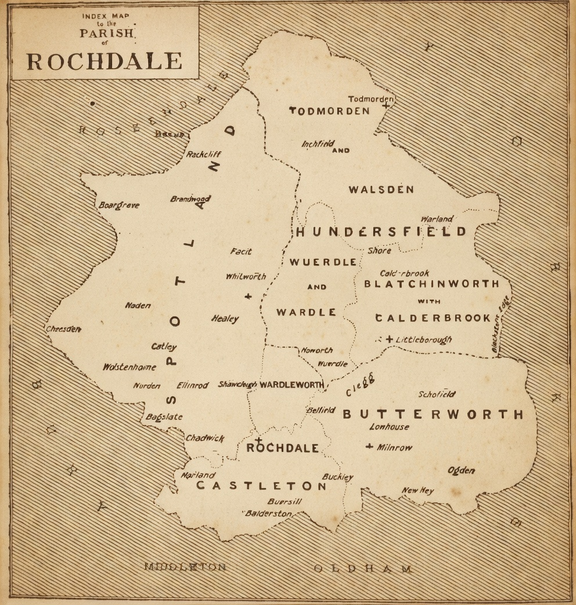

Parish Records
These are details of the Marriage license records and bonds provided in the Lancashire and Cheshire Record Society Publications, for the names relating to various members of the Holt families.
A great source for more details is the Online Parish Clerks project for the County of Lancashire. That site aims to extract and preserve the records from the various parishes.

17th Century (1624–1691)
- 31 December 1624: Richard Holt and Anne Jackson of Chester, Spinster. License issued to Revds. Astbrooke and Lloyd, Clerks.
- 30 January 1625–26: William Foster and Alice Holt, Parish of Whitegate, Cheshire. License issued to Mr. Benedict Painter, Clerk.
- 19 February 1625–26: Henry Holt and Alice Haworth, Parish of Clitherall [wV], Spinster. Bondsman: William Holt. For marriage at Bury, Lancashire, or Holcombe, Lancashire.
- 26 July 1626: Robert Holt, Gentleman, and Elizabeth Ashton, Parish of Middleton, Lancashire, Spinster. Bondsman: Henry Southworth. For marriage at Manchester or Middleton.
- 30 January 1626–27: Thomas Wood and Anne Holt, Parish of Bury, Lancashire. Bondsman: Francis Wood. At Bury, Rochdale, or Bolton, Lancashire.
- 25 May 1627: Thomas Dutton, Gentleman, and Alice Holt, Widow. Bondsman: William Dutton. For marriage at Sefton, Halsall, Huyton, or Walton, Lancashire.
- 23 December 1631: John Holt, Parish of Rochdale, Lancashire, and Anne Hamer, Spinster, Parish of Middleton, Lancashire. Bondsman: Joseph Livesey. For marriage at Rochdale, Middleton, or Bury, Lancashire.
- 9 May 1665: [Groom name missing] and Hannah Holt, of the same place [Ashton-under-Lyne]. Bondsman: Henry Cocke. For marriage at Ashton-under-Lyne or Middleton, Lancashire (License issued at Macclesfield).
- 3 February 1665–66: Peter Holt, of Toddington, Lancashire, and Mary Nuttall, of same.
- 22 January 1669–70: Thomas Hoult, of Thornton, and Margaret Widnes, of Stoake, Spinster. For marriage at St. Peter's or St. Oswald's, Chester.
- 23 November 1671: Jonathan Holt, of Timperley, and Ellen Worsley, of same, Widow. Bondsman: William Holt. At Cheadle, Stockport, or Northwich.
- 20 March 1671–72: William Holt, of Thornton in le Mores, and Catherine Brereton, of Lower Kinnerton, Spinster. Bondsman: Thomas Hoult. For marriage in the Choir of Chester Cathedral or at St. Oswald's.
- 14 August 1673: Edward Gregg, of Chester, Gentleman, and Abigail Holt, of same, Spinster. At St. Oswald's, Chester.
- 23 October 1676: Richard Atherton, of Atherton, Lancashire, Esquire, and Isabel Holt, of Castleton, Singlewoman. Bondsman: Richard Eckersly. At Rochdale, Leigh, or Bury.
- 22 November 1676: John Holt, of Spotland, and Margaret Lealand, of same, Spinster. Bondsman: Robert Chadwicke. At Rochdale, Littleborough, Whitworth, or Todmorden.
- 20 February 1676–77: William Holt, senior, of Thornton in le Mores, and Sarah Clarke, of same, Widow. Bondsman: William Holt, junior. For marriage at Thornton, Stoake, or St. Oswald's, Chester.
- 1 September 1678: Edward Holt, of Agden, Tanner, and Mary Hewett, of Mobberley, Spinster. Bondsman: John Antrobus. At Knutsford, Rosthorne, or Mobberley.
- 1 January 1679–80: Arthur Holt, of Rochdale, Grocer, and Ann Buckley, of same, Spinster. At Rochdale, Oldham, or Rossendale.
- 24 May 1683: Nicholas Prescott, of Hindley, and Abigail Holte, of Sharpe, Parish of Bolton, Spinster. At Wigan, Bolton, or Blackburn.
- 25 June 1683: Thomas Howell, of Christleton, and Hannah Holt, Spinster.
- 16 October 1684: Randal Crane<, of Cotton, and Elizabeth Holt, of Timperley, Spinster. Bondsman: Thomas Howell. At Christleton.
- 9 February 1686–87: Edward Holt, of Sale, Parish of Ashton-upon-Mersey, Clerk, and Elizabeth Starkey, of Urmston, Spinster. Bondsman: Thomas Dickenson, Parish Clerk of Northenden.
- 28 March 1688: Roger Holt and Alice Hawkinson.
- 23 July 1688: John Stanley, of Dealgarth, Cumberland, Esquire, and Dorothy Holt, of Wigan, Lancashire, Spinster.
18th Century (1703–1746)
- 26 March 1703: John Holt, of Mottram in Longdendale, Cheshire, Yeoman, and Hanna Wood, Parish of Glossop, Derbyshire, Spinster. Bondsmen: John Holt and William Sidebotham, Tallow-chandler. At Stockport or Manchester.
- 9 February 1704–05: Henry Holt, of Liverpool, Joiner, and Ellen Slater, of Ormskirk, Widow. Bondsman: Richard Wright, Carrier. For marriage at Ormskirk, Sefton, or the Chapel of Maghull.
- 28 February 1704–05: Edward Man, of Aston near Budworth, Husbandman, and Jane Holte, of Mobberley, Spinster. Bondsmen: Henry Holte, Chapman, and Joseph Jackson, Chapman. At Gt. Budworth, Mobberley, or Knutsford.
- 14 July 1707: John Holt, of Prestbury, Cheshire, Husbandman, and Catharine Eyre, of Pointon, Widow. Bondsmen: Isaac Broadhurst, Mason, and John Holt, Adlington, Agricola. At Prestbury.
- 13 September 1707: William Holt, of Stockport, Inn-keeper, and Elianor Thornilly, of Stockport, Spinster. Bondsmen: William Holt and George Holt, Butcher. At Stockport.
- 22 May 1708: Thomas Amery, of Hapsford, Yeoman, and Elizabeth Holt, of Barrow, Cheshire. Bondsmen: Samuel Smith, Cooper, and John Doe. At Barrow or Thornton.
- 17 November 1710: Thomas Holt, of Halton, Carpenter, and Elizabeth Whitley, of Halton, Spinster. Bondsman: Thomas Holt and John Doe. At Runcorn.
- 16 February 1711–12: John Kelsall, of Knutsford, Malster, and Elizabeth Holt, of Ashton-under-Lyne, Spinster. Bondsman: Thomas Harrison, Gentleman. At Ashton or Mottram.
- 29 March 1712: John Holt, of Bollington, Bowdon, Yeoman, and Elizabeth Hulbote [? Hurlbott] of Tatton, Spinster. Bondsmen: Hugh Holt and John Marsden, Innkeeper. At Manchester.
- 5 February 1713–14: John Holt, of Coptrode, Rochdale, Yeoman, and Sarah Colling, of Rochdale, Spinster. Bondsmen: Bernard Butterworth, steepler, and John Knolls, Yeoman. At Rochdale.
- 5 October 1715: Edward Thornton, of Carlton, Yeoman, and Margaret Holt, of Holcombe, Bury, Spinster. Bondsman: John Aynsworth, Agricola. At Bury.
- 25 February 1716–17: John Holte, of Longfield, Rochdale, Yeoman, and Mary Holte, of Greave in Rochdale, Spinster. Bondsman: James Clough, Yeoman, and Thomas Knolls, Yeoman. At Rochdale.
- [Circa July–August] 1743: Richard Holt, Yeoman, and Margaret Ryley, both of Marton, York (now of Ribchester). Bondsman: Matthew Ryley, Skipton, Yeoman. At Ribchester.
- 23 August 1746: Thomas Hoult, of Ulverston, Shopkeeper, and Ellen Cleaton, of Gleaston.